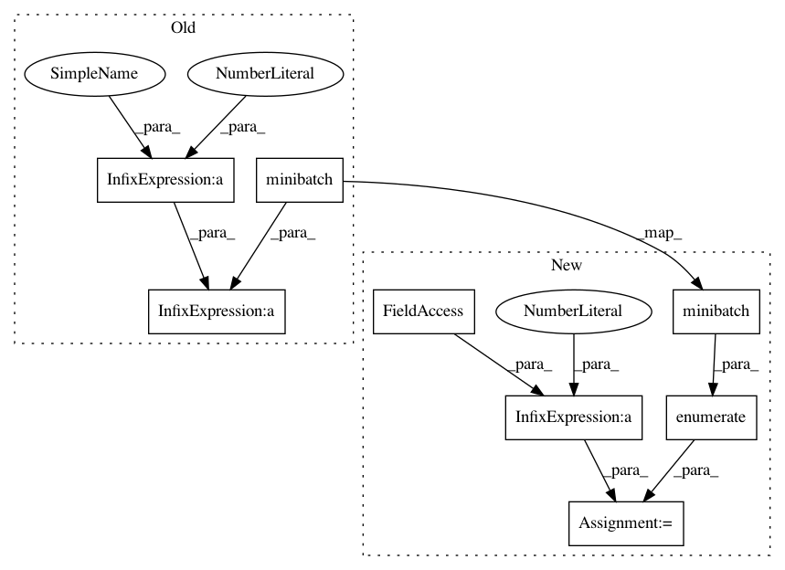

ffd72221f97a6c94170127b18ecd74e0d2fa8048,spotlight/factorization/explicit.py,ExplicitFactorizationModel,fit,#ExplicitFactorizationModel#Any#Any#,95
Before Change
for (batch_user,
batch_item,
batch_ratings) in minibatch(user_ids_tensor,
item_ids_tensor,
ratings_tensor,
batch_size=self._batch_size):
user_var = Variable(batch_user)
item_var = Variable(batch_item)
ratings_var = Variable(batch_ratings)
predictions = self._net(user_var, item_var)
if self._loss == "poisson":
predictions = torch.exp(predictions)
self._optimizer.zero_grad()
loss = loss_fnc(ratings_var, predictions)
epoch_loss += loss.data[0]
loss.backward()
self._optimizer.step()
if verbose:
print("Epoch {}: loss {}".format(epoch_num,
epoch_loss / (epoch_num + 1)))
def predict(self, user_ids, item_ids):
After Change
for (minibatch_num,
(batch_user,
batch_item,
batch_ratings)) in enumerate(minibatch(user_ids_tensor,
item_ids_tensor,
ratings_tensor,
batch_size=self._batch_size)):
user_var = Variable(batch_user)
item_var = Variable(batch_item)
ratings_var = Variable(batch_ratings)
predictions = self._net(user_var, item_var)
if self._loss == "poisson":
predictions = torch.exp(predictions)
self._optimizer.zero_grad()
loss = loss_fnc(ratings_var, predictions)
epoch_loss += loss.data[0]
loss.backward()
self._optimizer.step()
epoch_loss /= minibatch_num + 1
if verbose:
print("Epoch {}: loss {}".format(epoch_num, epoch_loss))
In pattern: SUPERPATTERN
Frequency: 3
Non-data size: 8
Instances
Project Name: maciejkula/spotlight
Commit Name: ffd72221f97a6c94170127b18ecd74e0d2fa8048
Time: 2017-07-13
Author: maciej.kula@gmail.com
File Name: spotlight/factorization/explicit.py
Class Name: ExplicitFactorizationModel
Method Name: fit
Project Name: maciejkula/spotlight
Commit Name: ffd72221f97a6c94170127b18ecd74e0d2fa8048
Time: 2017-07-13
Author: maciej.kula@gmail.com
File Name: spotlight/factorization/implicit.py
Class Name: ImplicitFactorizationModel
Method Name: fit
Project Name: maciejkula/spotlight
Commit Name: ffd72221f97a6c94170127b18ecd74e0d2fa8048
Time: 2017-07-13
Author: maciej.kula@gmail.com
File Name: spotlight/sequence/implicit.py
Class Name: ImplicitSequenceModel
Method Name: fit